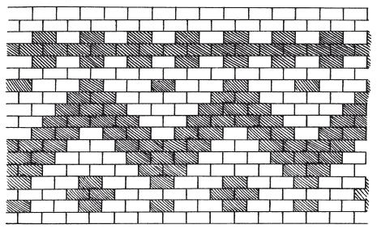
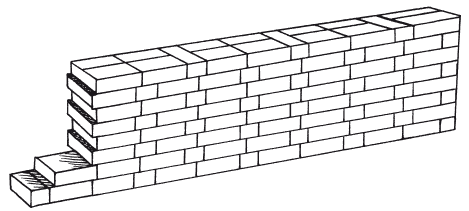

Декорирование кирпичного дома.

Основное преимущество домов из камня (кирпича или бетонных материалов) – это их прочность и долговечность. Не теряя своих внешних и эксплуатационных качеств, коттедж, построенный из камня, прослужит намного дольше по сравнению с деревянным домом. Однако камень обладает высокой теплопроводностью, поэтому толщина стен в каменном коттедже должна быть достаточной, чтобы обеспечить комфортное проживание в нем. В последнее время специалисты все чаще рекомендуют использовать при возведении стен пенобетон. За счет своей ячеистой структуры он имеет пониженную теплопроводность по сравнению с кирпичом. Это позволяет не только получить более теплый дом при той же толщине стен, что в кирпичном коттедже, но и немного сэкономить. Пенобетон дает возможность дому легче «дышать», поскольку данный материал хорошо пропускает имеющуюся в помещениях влагу наружу. Достоинство каменных сооружений в том, что они не горят, то есть огнеустойчивы по сравнению с деревянными постройками.
Строительство домов и коттеджей из камня весьма популярно еще и потому, что их архитектура отличается особой выразительностью и атмосферой, многообразием форм и возможностью придания дому неповторимого вида.
Еще одним преимуществом строительства коттеджей из камня является огромное количество вариантов отделки стен. Кирпичные стены, выложенные из хорошего кирпича с ровными швами, в дополнительной отделке не нуждаются. Однако унылое строение с гладкими стенами и отверстиями для окон и дверей к шедеврам архитектуры вряд ли причислишь. И если появляется возможность построить загородный дом, то хочется, чтобы он выглядел, словно игрушечка. Поэтому многие застройщики при строительстве загородного дома стараются использовать самые разные приемы наружной отделки фасадов, которые способны придать зданию особый, неповторимый облик. Одни пытаются сделать это за счет декоративной кирпичной кладки, другие штукатурят или облицовывают наружные стены, третьи стараются использовать различные приемы, имитируя старинные строения.
Материалы для декорирования домаОблицовочный кирпич
Облицовочный кирпич, он же фасадный или лицевой. Такой кирпич идет на облицовку зданий. Размеры у него стандартные, такие же, как у рядового (предназначенного для стен): 250 ? 120 ? 65 мм. Иногда производители выпускают фасадный кирпич уменьшенной ширины: вместо 120–85 мм.
Фасадный облицовочный кирпич, как правило, пустотелый, поэтому достаточно высоки его свойства и теплотехнические характеристики. Удельный вес облицовочного кирпича в среднем 1300–1450 кг/м , пористость составляет 6–14 %, коэффициент теплопроводности в среднем равен 0,3–0,5 Вт/мК, предел прочности на сжатие – от 75 до 250 кг/см в зависимости от марки. Такой кирпич обладает хорошей морозостойкостью, равной 25–75 циклам замораживания-оттаивания. Для поддержания «презентабельного» внешнего вида необходимо выбирать кирпич с гладкими гранями, формы должны быть точными, цвет – однородный, от белого до коричневого. Разнообразие цветов облицовочного кирпича зависит от состава глиняных масс, а также продолжительности и температуры обжига. Не допускаются трещины и расслоения поверхности.
Рельефный (фактурный) облицовочный кирпич
Рельефный (фактурный) облицовочный кирпич, у которого ложковая и тычковая поверхности имеют рисунок. Такой кирпич в кладке смотрится очень интересно. Правда, его изготавливают только на заказ, но выбор достаточно разнообразен. Облицовку можно сделать под мрамор, кору, дерево, панцирь черепахи или довольствоваться простым повторяющимся вдавленным рельефом, который тоже смотрится очень красиво. Пользуется спросом у застройщиков так называемый старинный кирпич – специальный фактурный с потертыми или нарочито неровными гранями. «Колотый» кирпич эстонского производства Тегca имеет особую фактуру, которая создает впечатление скола.
Фасонный кирпич
Фасонный кирпич по-другому называют фигурным, что говорит само за себя. Отличительные его признаки – скругленные углы и ребра, скошенные на стороны или криволинейные грани. Именно из таких элементов без особых сложностей можно выполнить декор фасадов, возводить арки и круглые колонны. Существуют специальные элементы для карнизов и подоконников («Керма»). Подвидом фасонного является лекальный – специальный кирпич, выполненный на заказ по особому лекалу. Выпускается также «сверхэффективный» лицевой (НПО «Керамика») кирпич плотностью 1100–1150 кг/м , теплопроводностью 0,25–0,26 Вт/мК, с пустотностью, равной 43–45 %. Его марка М125, М150.
Конечно, кирпичная облицовка обходится дороже, чем оштукатуривание, но при правильном подборе материала фасад из облицовочного кирпича более практичен и не потребует обновления гораздо дольше, чем штукатурка.
Для наружной отделки фасадов в последнее время все чаще используют облицовочный кирпич, который обладает высокими декоративными качествами. Грани облицовочного кирпича покрывают ангобом или глазурью. К глазурованным поверхностям кирпича предъявляются повышенные требования. Уникальная белизна силикатного кирпича объясняется чистой белизной кварцевого песка. В процессе прессовки и дальнейшей паровой закалки смесь кварцевого песка, воды и извести становится твердой. Такой строительный материал является непревзойденным по многим показателям – прочности, пожарной безопасности, теплоизоляции и влагостойкости. Поскольку кирпич невелик по размерам, то при его использовании можно создавать всевозможные формы и комбинации. При облицовке зачастую используют прием сочетания нескольких видов кирпича, усиливая тем самым декоративность такого вида отделки (рис. 5).

Глазурованный и ангобированный облицовочный кирпич
Глазурованный и ангобированный облицовочный кирпич предназначен для облицовки стен. Такой кирпич придает внешним и внутренним стенам оригинальный вид, делает их блестящими, разноцветными и нарядными.
Глазурь
Для получения глазурованного кирпича на обожженную глину наносят глазурь – специальную легкоплавкую смесь, в состав которой входит перемолотое в порошок стекло (кварцевый песок, каолин, полевой шпат, мел, бура, окислы свинца, борная кислота). Блестящий стеклообразный или эмалевый слой в виде тонкой (0,1–0,3 мм) пленки покрывает поверхность керамического материала, придавая ему красивый внешний вид и повышая стойкость против коррозии. Образование и закрепление слоя глазури на поверхности изделия происходят при обжиге.
Глазури бывают прозрачные и непрозрачные («глухие»), бесцветные и окрашенные. Прозрачными глазурями покрывают изделия белых или светлых тонов, а «глухие» (их называют эмалями) применяют для маскировки нежелательной окраски.
Для получения цветной глазури вводят окислы металлов. При добавлении окислов кобальта получают синий цвет, хрома – зеленый, марганца – коричневый, урана – желтый и серый, закиси меди или хлористого золота – красный.
При вторичном обжиге при более низкой температуре происходит образование стекловидного водонепроницаемого слоя, который обладает хорошим сцеплением с основной массой и повышенной морозостойкостью. Используя глазурованный кирпич, можно выкладывать мозаичные панно как в помещении, так и со стороны улицы.
Ангобы
Ангобы – это белые или цветные керамические массы, которые наносят на поверхность изделий до их обжига в виде тонкого слоя (0,2–0,4 мм). Для увеличения декоративного эффекта иногда по ангобу наносят прозрачную глазурь. Технология получения ангобированного двухслойного или цветного кирпича отличается тем, что цветной состав наносят на высушенный сырец и обжигают только один раз. Само декоративное покрытие тоже иное. Ангоб изготовляют из белой или окрашенной красителями глины, доводят до жидкой консистенции (шликер), после чего полученную массу тонким слоем наносят на поверхность необожженного изделия. В отличие от глазури, ангоб не образует стекловидного слоя. Если температура обжига подобрана правильно, то поверхность получается непрозрачной, ровной, матового цвета.
Широкая цветовая гамма позволяет реализовать фактически любую идею оформления внешних стен.
К внешнему виду глазурованного и ангобированного кирпича предъявляют приблизительно одинаковые требования. Цвет зависит от желания заказчика, но на цветной поверхности не должно быть пузырьков, вздутий, наплывов и трещин. Зазубрины и щербинки допускаются, но в очень небольшом количестве (до 4 шт.). То же относится к пузырькам и черным точкам – мушкам (не более 3).
Необходимо учитывать, что цветной слой обоих видов кирпичей достаточно хрупок – в этом их главный недостаток. Глазурованный и ангобированный облицовочный кирпич изготовляют в основном за рубежом, а в нашей стране только на заказ.
Технические параметры глазурованного и ангобированного кирпича приблизительно одинаковые: удельный вес – 1300–1450 кг/м ; коэффициент теплопроводности в среднем от 0,3 до 0,5 Вт/мК; пористость может достигать 6–14 %; морозостойкость – от 25 до 75 циклов замораживания-оттаивания; предел прочности на сжатие – от 75 до 250 кг/см .
Декоративную кладку обычно ведут по многорядной системе. Обязательным условием такой кладки является соответствие рисунка и швов. Если для рисунка используют стилизованные изображения животных, растений или какие-то другие фигуры, то их выкладывают по специальным шаблонам с предварительной раскладкой кирпичей на ровной плоскости.
Даже стандартный кирпич позволяет выполнить фасонную кладку, однако в настоящее время на промышленных предприятиях заказывают обожженные кирпичи нестандартных форм. Используя их, можно достичь действительно неповторимых результатов и создать очень красивые индивидуальные фасады. Так, округленные кирпичи и кирпичи со скошенными формами применяют для закругления углов, в карнизах и обрамлениях оконных и дверных проемов.
В фасадной облицовке применяют самые разные варианты кладки. Для этого кирпичи кладут как по горизонтали, так и по вертикали. Выбор вариантов зависит от замысла дизайнера и пожеланий будущего владельца загородного дома. Выразительность индивидуальной отделке фасада можно придать с помощью игры света. Такой эффект достигается, если лицевые кирпичи располагать под углом по отношению к плоскости стены.
Кирпичи при этом устанавливают как на ребро, так и на пласти, чередуя расстановку в определенном порядке. Если часть кирпичей выдвинуть за плоскость стены, то на ней образуются пояски, карнизы, пилястры и другие архитектурные детали.
Облицовка природными и искусственными камнями
В облицовке фасадов используют различные горные породы. Архитекторы и дизайнеры стараются максимально использовать природные свойства и качества камня, для чего применяют различные виды его обработки.
Природный камень долговечен и красив, обладает впечатляющей текстурой и богатой цветовой гаммой, к тому же ему можно придавать самую разную фактуру – полированную, рифленую, пиленую, колотую.
В качестве строительного материала природный камень может с успехом конкурировать со многими видами декоративной отделки зданий, а в определенных сочетаниях с ними и создавать интересные композиции. На современном строительном рынке представлены самые разные природные материалы.
Мрамор
Мрамор – кристаллическая горная порода, в переводе с латыни это слово означает «блестящий камень». С античных времен мрамор применяют для наружных и внутренних облицовочных работ. Обладает высокими декоративными качествами благодаря цвету, большому спектру тонов и оттенков, палитре красок. Однотонный мрамор обычно бывает белым, реже – черным или цветным. Так, оксид железа окрашивает его в красный цвет, а другие посторонние примеси придают мрамору полосатый, муаровый, пятнистый и жилковатый узоры. Относительная прозрачность мрамора порождает на поверхности тончайшую игру света и тени. К тому же этот камень легко поддается обработке и полировке, а также обладает высокой морозостойкостью. Правда, этот природный материал редко используют для наружной облицовки, поскольку под воздействием кислотных осадков мрамор желтеет, покрывается ржавыми потеками. Зато практически без ограничений для наружной отделки можно применять гранит.
Гранит
Гранит – магматическая горная порода, отличающаяся своими исключительными строительными и декоративными качествами. У гранита большие фактурные возможности: при зеркальной полировке на свету проявляется радужная игра вкраплений слюды. В качестве строительного материала его часто используют для облицовки цоколей зданий, изготовления всевозможных обелисков, колонн и других архитектурных деталей. Некоторые мраморы и граниты, имеющие красивый рисунок, могут быть после распиловки блока на плиты подобраны на плоскости стены в виде мозаичного рисунка.
Керамогранит
Керамогранит – это имитирующая гранит керамическая плитка, созданная на основе каолиновых глин. В последнее время керамогранит признан отделочным материалом XXI в. и все чаще его используют для украшения фасадов. Благодаря своим уникальным физико-механическим и декоративным качествам, он становится достойной альтернативой другим современным отделочным материалам. Керамогранит не только позволяет украсить фасад, но и продлевает срок его жизни.
К основным достоинствам этого строительного материала относится его высочайшая твердость, которая достигается в результате температуры обжига, равной 1250 °C. Для облицовки фасадов большей частью используют керамогранит с полированной поверхностью, для которого характерны четкость геометрических размеров (калиброванность), единый цвет в каждой партии, а также крупноразмерность, позволяющая успешно применять керамогранит в системах так называемых вентилируемых фасадов.
Златолит
Златолит – уникальный камень-плитняк, найденный на Урале. Его художественное достоинство – в способности отражать свет, создавая «солнечные искры». В зависимости от интенсивности освещения меняются и тона камня – от светло-зеленого на солнце до темно-зеленого в сумерках.
Камень-плитняк хорошо пилится и гвоздится без образования трещин. Плитки из златолита отличаются однородной структурой, ярко выраженным эффектом золотистого мерцания и красивой, не требующей полировки поверхностью. Такие плитки широко используют при отделке фасадов и интерьеров, а также при создании малых садовых форм архитектуры.
Эколит
Эколит – искусственный камень, который изготавливают на американском оборудовании по американской технологии. Данный строительный материал применяют при оформлении наружных и внутренних интерьеров, а также ландшафтов и каминов. Эксплуатационные качества эколита значительно превосходят свойства многих природных материалов. При высокой декоративности он обладает повышенной износостойкостью, не подвержен многим природным заболеваниям – воздействию мхов, плесени и т. д.
Туф
Туф может быть вулканическим и известковым. Вулканический туф – плотная горная пористая порода, образовавшаяся в результате цементизации пепла, шлака и других выбросов вулкана после его извержения. Объемная масса равна 700–1400 кг/м . Состоит из обломков вулканического стекла, пемзы и др. Материал декоративен, морозостоек, обладает малой теплопроводностью. Цвет известкового туфа может быть фиолетово-розовым, желтым, оранжевым. Применяется как ценный строительный и декоративный материал в виде пиленых плит для облицовки фасадов.
Известковый туф (травертин) – пористая, ячеистая порода, образовавшаяся в результате осаждения карбоната из горячих или холодных источников. Отличается малой объемной массой – от 1400 до 1800 кг/м .
Керамические фасадные плиты
Керамические фасадные плиты в зависимости от конструкции, способа изготовления и крепления подразделяют на закладные (устанавливаются одновременно с кладкой стен) и прислонные (устанавливаются на растворе после возведения и осадки стен).
В зависимости от назначения плиты подразделяют на 4 вида:
– плоские– предназначены для облицовки стен;
– перемычные– используют для облицовки перемычек над окнами и дверными проемами;
– угловые– предназначены для облицовки наружных углов;
– прокладные– применяют для перевязки с рядовыми плитами.
Керамические фасадные плиты не должны иметь искажающих поверхность дефектов – искривлений, щербин на ребрах, отбитых углов. На лицевых поверхностях допускаются лишь отдельные мелкие трещины, но и в этом случае плиты при простукивании должны издавать чистый, недребезжащий звук.
При облицовке заданий, к которым предъявляются повышенные архитектурные требования, используют закладные плиты. При этом облицовку ведут одновременно с кладкой на том же растворе. Прислонные плиты применяют для наружной облицовки и крепят при помощи пластичного раствора.
Плитки фасадные малогабаритные
Плитки фасадные малогабаритные относят к типу прислонных плит и используют для наружной облицовки стен, пилястр, углов, дверных и оконных откосов. С лицевой стороны такие плитки имеют гладкую или фактурную поверхность, а с тыльной в них делают углубления, которые нужны для лучшего сцепления с раствором. Плитки разделяют на прямые (рядовые) и угловые. Основной размер плиток – 240 ? 140 мм, плитки типа «кабанчик» имеют размер 120 ? 65 мм.
При облицовке загородных домов малогабаритными плитками важен подготовительный этап. Заключается он в детальном осмотре, промере и провесе поверхностей стен и углов. Если на участках стен имеются отклонения от вертикали, превышающие 4 см, то намечают способы их выравнивания путем нанесения слоя штукатурки по металлической сетке. Выпуклые части стены стесывают. Перед облицовкой поверхность очищают от пыли и грязи, кирпичную кладку увлажняют, а плитки смачивают. Тыльную сторону плиток для лучшего сцепления раствора или клеевого состава можно обработать слабым раствором соляной кислоты из соотношения: 40 объемов соляной кислоты на 100 объемов воды. После затвердения раствора швы расшивают, их толщина – от 7 до 10 мм.
Применение керамики вместо природного камня удешевляет работы, значительно расширяет дизайнерские возможности без ущерба для эстетики и потребительских свойств. Мелкие плитки объединяют обычно в узорчатые коврики, которые именуют мозаикой. Плитки больших размеров могут иметь фактуру керамической плитки или искусственного камня в самых разнообразных его формах.
Декоративные качества природных и искусственных строительных материалов подчеркивает и усиливает их фактурная обработка. Так, точечная фактура позволяет увидеть структурные особенности камня, колотая – придает фасаду загородного дома монументальность и создает игру светотени, полированная (зеркальная) – выявляет достоинства текстуры и создает насыщенность цвета. Хороший эффект создает контрастное сочетание полированной фактуры с фактурой скалы (колотого камня).
При кладке с облицовкой плитами из природных и искусственных камней перевязка плит с кладкой производится при помощи прокладных рядов из лицевого кирпича. Шов между кладкой и облицовочными плитами следует полностью заполнять раствором.
Чаще всего облицовку камнем используют для отделки цокольной части здания, колонн, оконных и дверных проемов, пилястр, реже – при отделке полей стен. При отделке готовых стен плиты крепят двумя способами:
– просто на растворе;
– с применением скоб, штырей, клиньев, крюков, закрепов и анкеров.
Выбор вида крепления зависит от породы облицовочных камней и их размеров. На растворе без дополнительного крепления анкерами стены облицовывают травертином и другими материалами, которые имеют открытые поры. Используют так называемые плиты тонкого пиления, то есть их размер не должен превышать 200 ? 400 мм, а их толщина должна быть не более 10 мм. Фактура каменной облицовки может иметь рельефную обработку или шлифованную поверхность. Облицовку рекомендуется производить при положительных температурах наружного воздуха.
Используя все вышеперечисленные материалы, проявив фантазию и творчество, можно создать дом, который будет радовать владельцев неповторимой красотой.
Виды художественного декорирования домаЗагородный дом будет выглядеть весьма красиво, если при строительстве использовать декоративную, имеющую четкий геометрический рисунок кладку. Декоративная кладка – разновидность лицевой. Чтобы обеспечить ее выразительность, применяют различные способы разрезки облицовочного слоя вертикальными швами. Подобные сочетания перевязки и раскладки кирпича в лицевом слое, а также разный по размерам и цвету кирпич помогают получить самые разные рисунки.
Технология выполнения декоративной кладки в принципе мало отличается от обычной лицевой. Однако различия все-таки существуют. Кладку лицевой поверхности стен выполняют кирпичами, которые имеют правильную форму, целые углы и кромки. Для декоративной кладки используют специальные кирпичи, их тщательно отбирают и сортируют по цветности, оттенкам, размерам и другим отличительным признакам.
При строительстве приходится варьировать цветом и размерами кирпичей, местом расположения вертикальных швов. В зависимости от расположения тычковых и ложковых рядов различают несколько видов декоративной кладки, наиболее популярны готическая, крестовая.
Готическая кладка
Готическая кладка – одна из самых древнейших. Ее суть заключается в простом чередовании тычковых и ложковых рядов. Прочная и одновременно красивая кладка создается при условии строгой горизонтальности верстовых рядов с ровными швами (рис. 6).

Крестовая кладка
Крестовая кладка – разновидность готической. Отличается от нее только тем, что тычковые кирпичи укладывают не через один, как в готической кладке, а через два ложковых кирпича.
Один из самых простых способов сделать здание нарядным – использовать облицовочные кирпичи. Благодаря им, даже при самой обычной кладке внешние стены выглядят очень красиво. Используя всевозможные узоры, можно придать фасаду дома неповторимый облик.
Обязательным условием крестовой кладки является расположение вертикального шва между ложковыми кирпичами точно посредине нижележащих тычковых рядов. Если происходит смещение шва в ту или иную сторону, то снижается прочность кладки и портится ее внешний вид.
Кирпичная облицовка
Кладку с облицовкой кирпичом ведут из отобранного по цвету и форме кирпича. Главное достоинство кирпичной облицовки состоит в том, что она со временем приобретает более солидный и привлекательный вид. На протяжении долгого времени кирпич сохраняется в виде однородного крашеного минерала и может пережить не одно поколение владельцев дома. Фасадный кирпич практически не требует никакого ухода, он не гниет и не горит, хорошо переносит зимнюю стужу и летний зной, его не разрушают грибки и он оказывается «не по зубам» насекомым.
Существуют несколько видов декоративных кирпичей.
Техника облицовки натуральными материалами
Выбор той или иной фактуры каменных плит зависит от задачи и целей архитектора или дизайнера. Методика облицовки практически не отличается от укладки керамических плиток. Материал укладывают на растворы или клеи на влагостойкой цементной основе. Растворы, которые применяют для заполнения зазоров, не должны содержать растворимых солей, образующих на поверхности стены высолы. Использовать лучше растворы на пуццолановом портландцементе и промытом песке с добавкой пластификатора в виде мылонафта или петролатума. При облицовке вертикальных поверхностей влага не должна проникать через швы между камнями.
При облицовке старых зданий плитки можно устанавливать вплотную, без швов, однако в новостройках облицовку без швов выполнять нельзя, поскольку может произойти разрушение облицовочного слоя из-за разницы в осадке облицовки и основной стены. Разница осадки возникает вследствие разного количества и расположения швов в кладке и облицовке. Пустые швы в облицовке можно заполнять раствором не раньше, чем нагрузка на стены достигнет 85 % от проектной. Обычно происходит это через полгода после окончания кладки стен, тогда и можно выполнять облицовку фасадов искусственными плитками.
В зависимости от качества кладки устанавливают толщину намета раствора. Слой раствора между тыльной стороной плитки и стеной не должен превышать 15–20 мм. После установки каждого ряда облицовки проверяют, нет ли пустот между стеной и плиткой. Если такие пазухи имеются, их заливают жидким раствором.
Облицовку фасадов плитками, керамическими камнями и другими материалами лучше всего выполнять одновременно с кладкой. Попытки облицевать уже готовое строение зачастую приводят к нежелательным результатам – отвалившимся плиткам. Для получения нормальной прочности кладки с облицовкой лицевым кирпичом и камнями необходимо соблюдать следующие требования к перевязке швов:
– для кладки из кирпича – 1 тычковый ряд должен быть не реже, чем через 6 рядов кладки;
– для кладки камней – 1 тычковый ряд не более чем на 3 ряда кладки;
– тычки могут располагаться как отдельными рядами, так и чередоваться с ложковыми камнями.
Стены с наружной отделкой лицевым кирпичом или лицевыми камнями выкладывают как из обычного кирпича, так и из пустотелых кирпичей и камней.
Искусственное старение кирпичных стен
В последнее время в нашей стране заметен интерес к родовым имениям, и даже появилась возможность не просто возродить «старинные семейные обычаи и традиции», но доказать свое право на возвращение некогда экспроприированных усадеб. Однако дело это хлопотное, и легенда о родовом гнезде зачастую остается красивым семейным преданием. Многие поступают проще и заново возводят якобы родовое имение, искусственно состарив кирпичные стены. Ведь никто не поверит в унаследованную вотчину, если здание построено с использованием современного облицовочного кирпича и имеет идеально ровную кладку.
С помощью объемной окраски такие архитектурные украшения, как накладные детали из бетона, долгое время сохраняют неизменный внешний вид, к тому же они достаточно долговечны, поскольку срок их службы составляет несколько десятков лет.
Некоторые фирмы создают специальные современные технологии, которые позволяют возвести дом «под старину», используя специальные «пережженные» кирпичи, придающие стенам состарившийся вид. Иногда в кирпичи втирают мох и землю, создавая стены, искусственно покрытые «древней» зеленью.
Архитекторы былых столетий в изобилии использовали всевозможные декоративные элементы. В наши дни архитектурные детали выполняют штукатурными методами или изготавливают из бетона. Использование архитектурных элементов «под старину» в виде лепных карнизов, завитков (краббов), ажурных арок и арочек, башенок, обрамлений окон и иного дает широкий простор для стилевых решений, позволяет исправить возможные дизайнерские недочеты или изъяны дома.
Достоинства бетонных декоративных изделий заключаются в том, что накладные детали из бетона внешне очень похожи на дорогостоящий белый камень, зато они значительно дешевле. Изготавливают такие архитектурные детали в особых мягких силиконовых или жестких пластиковых формах, благодаря которым можно создавать самые замысловатые конфигурации.